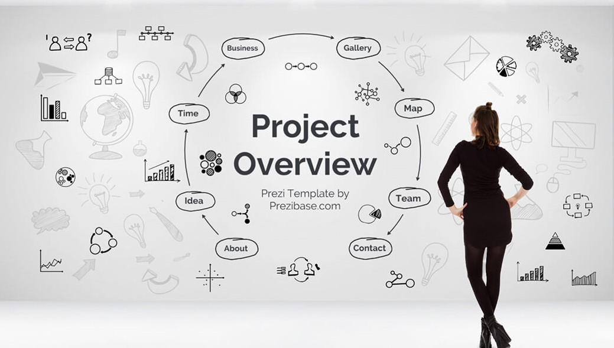
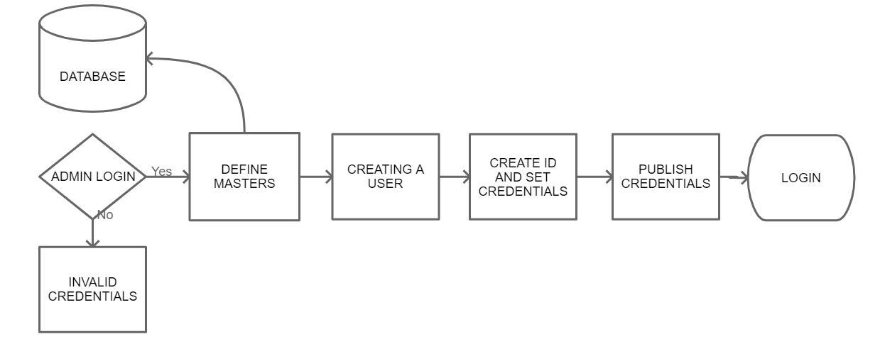
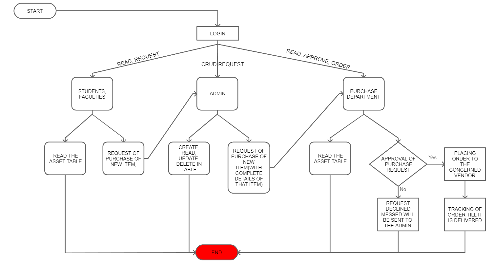
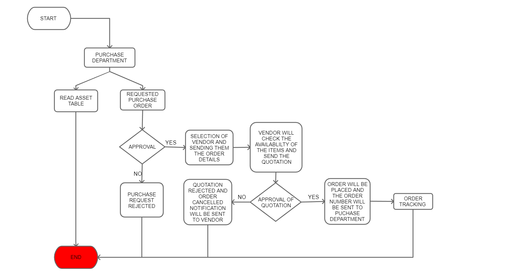

Effective Summary:-

Asset management is the process of organizing, planning and controlling the acquisition, use, care, refurbishment, and/or disposal of physical assets to optimize their service delivery potential and to minimize the relate disks and costs over their entire life through the use of intangible assets such acknowledge based decision making applications and business processes.
Asset Management System is simply a system that help any Institution keep track of all their assets such as library books to all the essential equipment’s and Investment. Keeping tabs on the assets helps streamline operations, especially in relation to their sale or disposals. The process also minimizes the chance of recording ghost asset since all the available assets are well accounted.
An effective asset management system improves the accuracy of record by using the asset management features. It also avoids spending on dublicate assets by accessing assest register and it stick to the budget by acurately tracking the request
Goals & Objective:-
Our Mission is to contribute to sustainable institutional economy to Asset Management System for long term benifits of our client
- Maximize and track the usability of equipment (eg:- table, lib books ),
- Ensure the availability of assets such as lab equipment to institution,
- Make sure the equipment needed to run the institution is always in working condition,
- Achieve effective management of a institute entire inventory in a cost-effective way With Asset Management Software.
Overview:-

Asset Management System will help the organization to track the usability and availability of assets in a cost-effective and organized manner
An effective management system also provides access to a comprehensive asset register for all educational personnel. This includes teachers, department heads, administrators, managers, and even local districts. The data highlighted in an asset register allows staff and students to know the location, condition, and quantity of each institute asset.
An important part of keeping an educational institution running smoothly is making sure all critical assets are operating at maximum output. One way this can be achieved is with an effective maintenance and repair schedule. For instance, by checking the correct data stored in the system, schools will be able to know when the bus needs a service. As well as identifying when the computers in the IT department will be unavailable due to updates and repairs.
This project will start with the registration process of any organization and end by managing all the asset by using the record system and by properly purchasing the asset as per the request by vendors through Asset Management System
Analysis:-
-
Improve the Accuracy of Record Keeping
The amount of paperwork required to track equipment, documents, and records throughout institute grounds can be overwhelming. But, the right school asset management tool can provide the features necessary to build a central data repository for all essential assets. This is also crucial for protecting and backing-up data in case of fire or damage, which can destroy a paper-based asset management system and lead to complications and delays when it comes to filing insurance claims.
-
Avoid Spending on Duplicate Assets
Having access to the institute’s asset register can reduce spending on equipment that is already available. For instance, a teacher may request that their classroom needs more chairs. But, by looking at the data, they’re able to see a number of chairs not being used in another department. Instead of purchasing more chairs, they can relocate them from one department to another, where they can be of more use.
-
Stick to Budgets by Accurately Tracking Spending
By using the right tools, institute are able to manage and track spending requests of each faculty department. This can be a request such as trays and cutlery from the school cafe, or for more books and desktops from library staff. Whatever the requirement, these requests need to be aligned with the budget set by the Department of Education or the local district
-
Reduce the Amount of Manual Asset Audits
With access to a real-time asset register, staff are able to know the location and quantity of equipment available to them. This means the constant need for manual audits of assets, which require a lot of time and resources, are no longer needed.
According to our research we found out that all the big organization needs someone like asset manager to look after their physical assets irrespective of there size and value. This managing of assets is very lethargic work as all of these were managed by a person using registers, manually. They used to keep several registers for different types of assets for example one register for all the travelling vehicle the organization holds, one register for all the computer labs item, one for the mechanical items and so on and so forth, which was very, very, very difficult job to do. As if we were to update something about any asset than we would have to first search for that particular register, then search for the category of the item, then search the page number and so on. So, this kind of asset managing was a job of a professional to do and was very tiring too. And we also found out that this professional had to go to all the assets to check there working conditioning manually.
So, in its alternative we have thought of a new system where we will NOT need any professional to manage the asset of organization. And also, it will reduce the amount of time that were utilized to manage these assets. Since it does not need any professional to operate it also becomes cost effective too. And will easier to operate so any one can do this job.
And some best benefits of our system are:-
Process Definition:-
Asset Management System Consists of various modules which shows the process to manage the asset of organization in a cost-effective and organized manner.
Following are those Modules:-
- Registration, Validation, and Verification of Organization
- ID Generation
- Admin Login
- Creation of User Directory
- Login – (Students & Faculties, Admin, Purchase Department)

Registration Validation And Verification

Steps:-
- The process starts with the Institute or Organization Registration
- If the institute is already registered on the software then using the admin Credentials,he/she directly gets the Admin login page, if not then follow step-3
- Register and Validation of the organization or Institute takes place.
- After validation, Verification of an organization via OTP or Mail id will be done.
ID Generation

- Step:-
- If verified then, Admin Id will be generated if not verified successfully, then follow the process again from step 1 step by step
Admin Login

-
Step:-
- After admin id is generated, admin can login using its credentials to create user directory.
If admin is not able to login it will display credentials are invalid
Creation of User Directory

-
Steps:-
- IF admin is logged in on the admin page successfully, he/she has to define masters which will be saved on database
- after defining masters admin has to create the id for each and every user of organization by creating their id and setting their credentials
- After Creation, admin will publish the credentials of users by which they can login.
Login
Login process is divided into 3 segments
-
Step:-
- Students & faculties login
- go to the login module and using the credential you will be able login successfully , if not it will display login credential invalid Step 2 after successfully registration, dashboard display the options to read the asset table and request for the purchase
- after successfully registration, dashboard display the options to read the asset table and request for the purchase
- Admin login
-
Step:-
- go to the login module and using the credential you will be able login successfully , if not it will display login credential invalid Step:-
- after successfully registration, dashboard display the options to CRUD the asset table and request for the purchase of item with complete detail
- Purchase Department
×- The Purchase department will recieve the purchase request from Admin, the request will be received in the form of Notification.
- The Purchase department will have option of accepting or rejecting the item purchase request.
Option1/2: If they reject the purchase request then the app will send the rejected notification t the and then admin will send that rejected notification to whose so ever it may concern(If requried). {THE END}.
option2/2: if they accept the purchase request then the app will send the accepted message to he admin and then admin will forward it to whom so ever it may concern(if required). - Then the purchase department will select the vendor and send the item details (such as Qunatity, Quality, deadline of the delivery etc) to them.
- The vendor will check the availabilty of the item and then send the quotation accordingly
- option1/2
if the purchase department does not like the quotaion then they will reject and go back to step3.
option2/2: If the purchase department approves to the qoutation, then the vendor will place the order and send the order number to the department. - The purchase department will keep trace of ordered item.
Technology To be used :-

FRONTEND SECTION:In this section, we will use frontend technology like HTML (HYPER TEXT MARKUP LANGUAGE),
CSS (CASCADING STYLESHEET) and JavaScript through which user sees and interact in the browsers.
DATABASE SECTION:In this database is used like MYSQL, for collection of information, store the data at time of registration and enable the user to change the information so, it is simple to control of meeting attendees whether the attendees is an individual or group of attendees or any external attendees attended the meeting then the validate information should be provided.
FRAMEWORK:- For Framework we will use .NET core MVC which is a open source and cross plateform framework to build application for all operating system
Conclusion:-
Digging through folders full of Institution inventory Management( process of ordering, storing )spreadsheet or binders with asset record is a time consuming and frustrating chore, with our Asset Management software we can access centralized asset data and add unlimited data and add the unlimited users, freeing up lots of previously wasted time & energy. “Say goodbye to the outdated spreadsheet inventory method” With on-the-fly updates for inventory tracking, we’ll know everywhere our asset has been from purchase to disposal. This helps us enforce compliance with grant requirements reduce asset downtime and get detailed reports that will help us make smarter purchases in future. This Asset Management is simple to use, it’s customizable, it’s cloud based and it’s cost effective too.